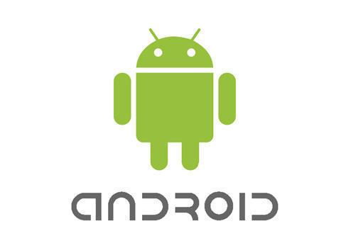

Step 1

Most all common android boxes are supported, to install:
On your Set Top Box, use browser like Chrome or Firefox, browse to http://emu.sw4u.net
You may also download the apk file onto a usb drive and run it using a file browser on your android Set Top Box, it is important that you enable install from unknown sources in your device settings first.